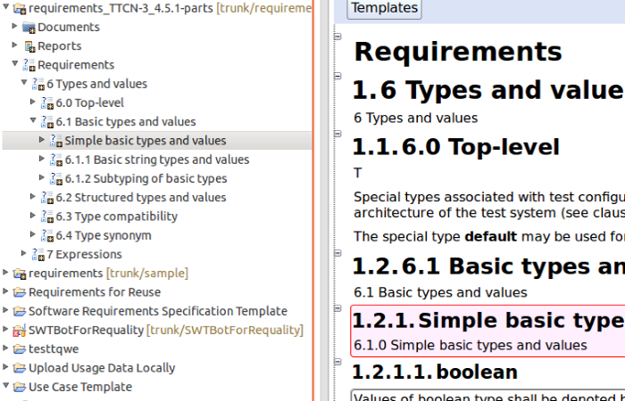
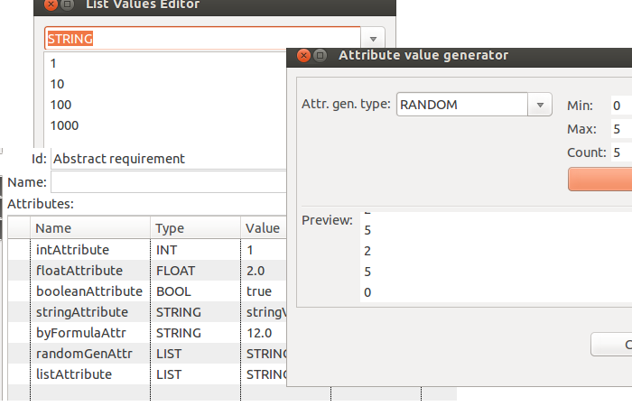
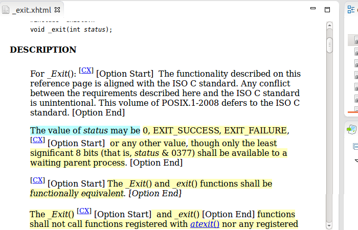

Requality is a tool to manage requirements primarily to software. Requality automates basic requirements processes. Requality could be used as an initial requirements storage, as a framework to structure and attribute requirements presented as text documents (e.g. software standard documents).
Use cases: